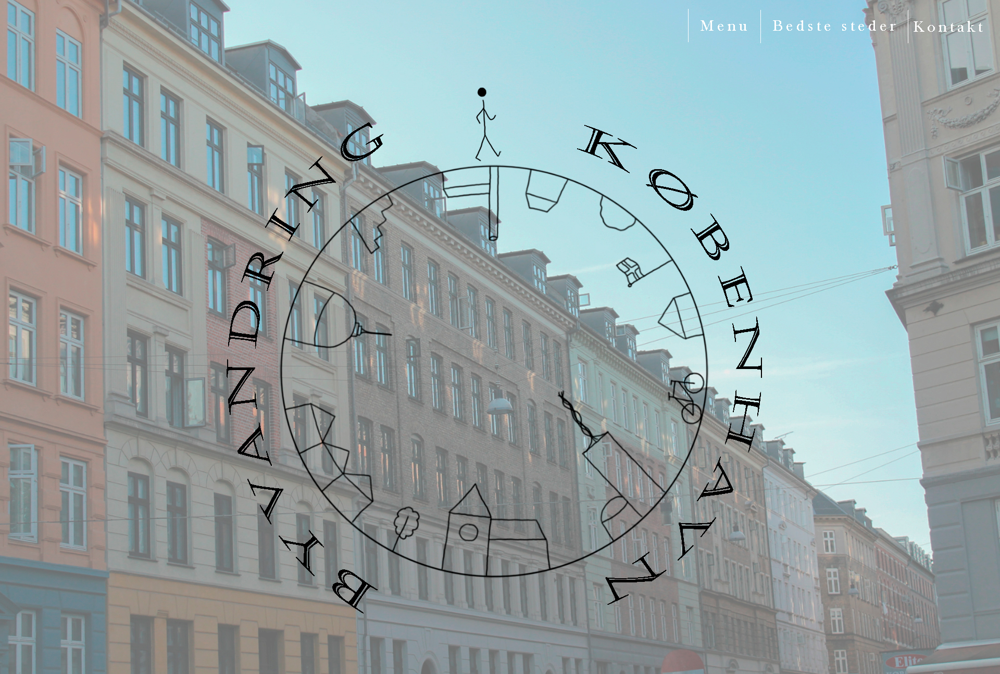
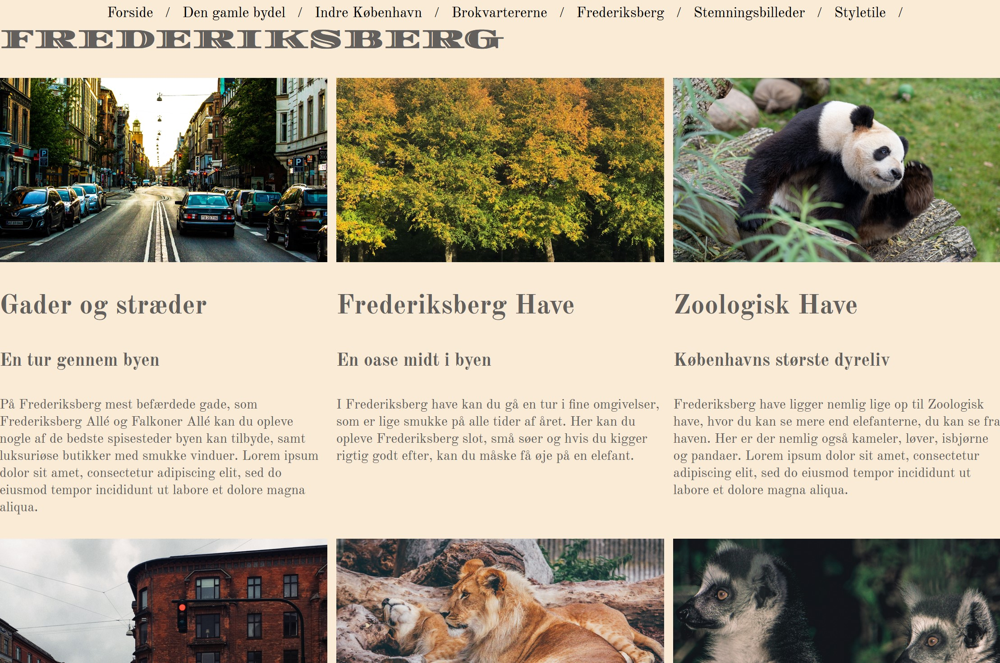
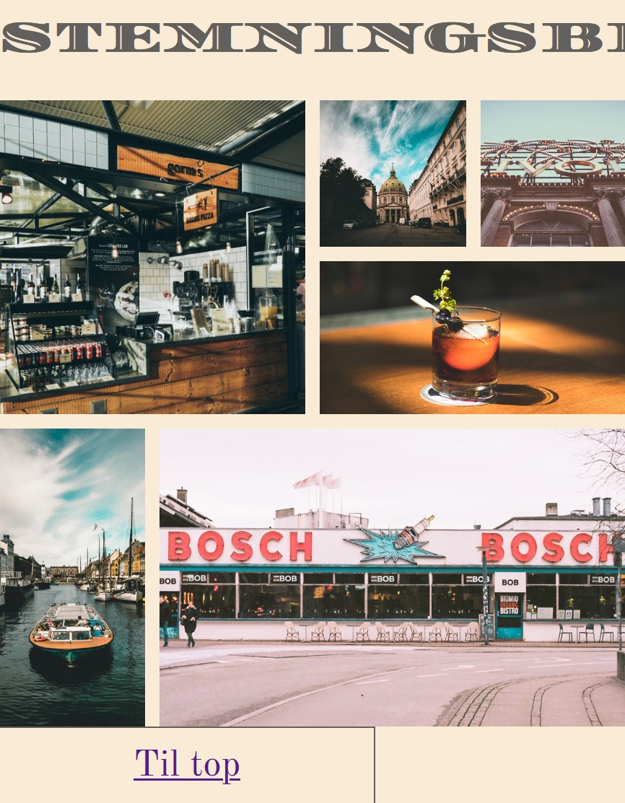
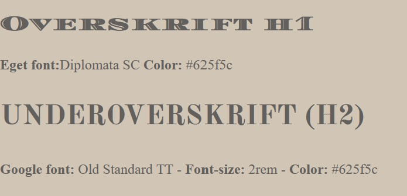

Responsive site
Uddrag fra responsive site
Under arbejdet med grundlæggende web, lærte vi om layout, kontraster, splashbillede, gestaltlove, farveharmonier osv. Dette skulle tænkes over og medtages under kodning af sitet.
  Her har jeg brugt gestaltloven om nærhed i galleriet. At billederne står tæt, viser at det er en gruppe, som skal ses som en samlet helhed.
Siden jeg lavede dette site, har jeg lært en del om media quries, og bare kodning generelt, og ved derfor hvordan jeg skal rette op på de fejl, som er lavet i mit første responsive site.
http://designtree.dk/kea/02_web/04_responsive/responsive_site_v1/index.htmlStyle
Jeg fik tildelt hipster style, som skulle være den gennemgående stil på sitet. Hipster style bliver ofte brugt ved barbershops og tatovører. Jeg valgte at tage udgangspunkt i en byvandring gennem København, da jeg selv lige er flyttet hertil, og tænkte at det kunne være fint at finde de små gemte perler, og lave et site ud fra dette. Da de fleste brokvarterer i København overvejende består af gamle bygninger, passede dette samtidig godt til hipster style, da denne stil selv springer ud af gotiske bogstaver og vintage stil.
Jeg endte med at vælge disse to serif-fonte, da de har en vis lighed.